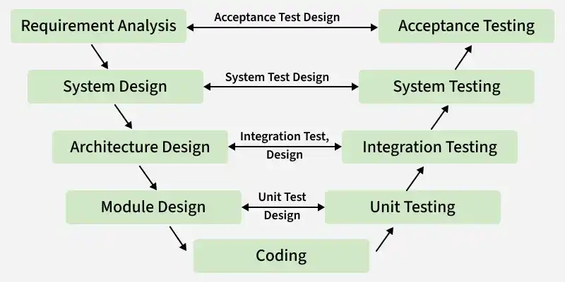

Andreas Hussain Sarantaris · 01-10-2026
Frederikssund Gymnasium · Programmering B
main/master hver gang I er færdige med en fuldt fungerende feature/issue.main/master i sin egen feature så merger man main/master ind i sin egen branch.Ressourcer: GeeksforGeeks > Types of Software Testing

UEQ_Data_Analysis_Tool_V14.xlsx.index.html fil er i den øverste mappe/niveau i repositoriet.I skal lave synopsen sammen i grupperne (i modsætning til eksamensprojektet), og angive hvilke afsnit og kodedele I hver især er ansvarlige for. Men I skal sørge for at de andres dele er korrekte, og hjælpe hinanden.
Synopsen være 2-5 normalsider, eksklusiv koder, figurer, bilag, etc.
Synopsen skal afleveres søndag den 4. oktober kl. 21:00 (se opgaven på Lectio).
I skal til "eksamen" enten tirsdag den 6. oktober eller torsdag den 8. oktober.
| Punkt * | Start + varighed | Aktivitet | Indhold |
|---|---|---|---|
| 1U | 08:10 + 10 | Status på hvor I er nu | Kort opsummering fra sidste lektion og status på hvor langt I er nået. |
| 2U | 08:20 + 10 | Introduktion til test-fasen | Introduktion til forskellige testtyper og V-modellen. |
| 2Ø | 08:30 + 20 | Påbegynd test-fasen | I skal planlægge en User Acceptance Test som en anden gruppe skal udføre. |
| 3U | 08:50 + 5 | Introduktion til udrulnings-fasen | Introduktion til delelementer i udrulning- og vedligeholdelsesfasen. |
| 3Ø | 08:55 + 50 | Offentliggør jeres program og test hinandens spil. | I skal offentliggøre spillet med GitHub Pages og teste en anden gruppes spil ud fra de tests som de har planlagt. |
| P | 9:45 + 15 | Pause inden næste modul | . |
| 4U | 10:00 + 10 | Genopfriskning af formaliteterne for synopsen | Genopfriskning af kravene og strukturen af synopsen. |
| 4Ø | 10:10 + 75 | Planlæg og påbegynd synopsen | I får resten af timen til at påbegynde synopsen og planlægge hvem der gør hvad, samt færdiggøre jeres program. |
| 5U | 11:25 + 5 | Opsamling, lektier og næste lektion | Hjemmearbejde til næste gang og emnerne for næste lektion. |
| 5Ø | 11:30 + 5 | Afrunding | Færdiggør jeres arbejde og reflektér over jeres læring. |